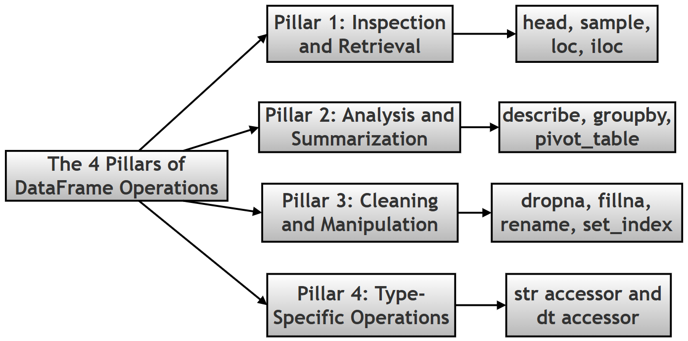
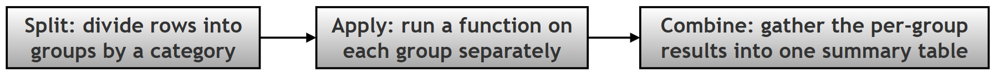
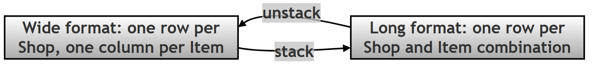

Pandas Conceptual Questions: A Study Companion¶
What this page covers¶
This page is a companion resource to the pandas chapter of the printed book. Where the earlier Palmer Penguins walkthrough on this site works through one project end to end, this page instead collects 54 focused conceptual and scripting questions — the kind you might meet in a quiz, an interview, or simply while double-checking your own understanding — each with a full, worked explanation.
The questions themselves are reproduced exactly as printed in the book; nothing about their wording has been changed. What's new here is the answer to each one: expanded into logical steps, with technical terms explained in plain language (and linked to the official documentation for anyone who wants to go deeper), and — for the questions that lend themselves to it — a short, runnable code example showing the concept in action, together with its real, verified output.
You don't need anything beyond the pandas basics already covered earlier in this chapter (DataFrames, Series, simple selection) to follow along; anything more specialised is explained the first time it comes up.
A quick heads-up on numbering: the original material happens to print two different questions both labelled "31." This page reproduces that exactly as given — both questions appear below, in their original order, each flagged with a small note where it occurs — rather than silently renumbering anything.
Topic map¶
The questions are answered below in their original printed order (1 through 54, with the one repeated "31"). If you'd rather jump straight to a topic, use this map instead:
| Topic | Questions |
|---|---|
| Foundations & core concepts | 1, 2, 3, 4, 11, 44, 51 |
| Series, index & building DataFrames | 5, 6, 7, 9, 10, 31 (second), 43, 46, 47 |
| Exploring, describing & filtering data | 12, 13, 14, 15, 29 |
| Grouping, aggregating & pivot tables | 16, 17, 18, 33, 41, 49 |
| Reshaping data: Wide, Long & MultiIndex | 19, 20, 35, 39, 54 |
| Cleaning missing data | 21, 40 |
| Type-specific accessors & dates | 22, 45, 48, 50 |
| Reading & loading data (files and the web) | 8, 23, 24, 25, 26, 27, 28, 31 (first), 32, 34, 36, 37, 38, 42, 52 |
| Combining multiple DataFrames | 53 |
| Choosing a dataset | 30 |
The Questions¶
1. What is the fundamental relationship between the pandas library and numpy?¶
In short: pandas is built on top of numpy — every pandas Series and DataFrame stores its actual numbers in a numpy array underneath, and pandas adds row/column labels plus a much larger toolkit for messy, real-world (not just numeric) data.
Think of it as two layers:
- numpy is the engine room. It gives Python fast, memory-efficient arrays of a single data type (all integers, all floats, and so on), and the low-level math operations that work on them at C-language speed.
- pandas is the dashboard on top of that engine. It wraps numpy arrays with row labels (the index) and column labels, and adds hundreds of convenience methods — filtering, grouping, reading files, handling missing data — that numpy alone doesn't provide.
The practical payoff is that pandas keeps numpy's speed for number-crunching while adding the "which row/column is this?" bookkeeping and the flexibility to mix data types in one table, which is exactly what real spreadsheets and databases look like.
import pandas as pd
# Step 1: build a small DataFrame
df = pd.DataFrame({'a': [1, 2, 3]})
# Step 2: peek at what pandas is storing underneath, via .values
print(type(df.values)) # the underlying container
print(df.values.dtype) # the numpy data type it holds
Output:
<class 'numpy.ndarray'>
int64
Learn more: numpy · pandas data structures overview
2. Explain the core differences between a Series, a DataFrame, and a Panel in the pandas ecosystem.¶
In short: a Series is one labelled column, a DataFrame is a labelled table (many columns), and a Panel was an old, now-removed structure for 3-D data — its job today is done by a DataFrame with a MultiIndex instead.
Breaking down each one:
- Series — a single, one-dimensional labelled array. Picture one column from a spreadsheet, with a label (the index) attached to every value.
- DataFrame — a two-dimensional table: rows and columns both carry labels, much like an Excel sheet or a single SQL table. In fact, a DataFrame is really a collection of Series that all share the same row index — each column is a Series.
- Panel — pandas' original attempt at a 3-dimensional container (think: a stack of DataFrames, like several sheets in one workbook). It was removed from pandas years ago because it was awkward to use and most 3-D problems are better solved with a MultiIndex DataFrame (one 2-D table where the row labels themselves are combinations of two or more keys — see Question 20/39 and Question 51 below).
Below, hasattr(pd, 'Panel') confirms that Panel genuinely no longer exists in a modern pandas installation — trying to use it raises an error rather than doing anything.
import pandas as pd
# Step 1: create a Series (one labelled column)
s = pd.Series([10, 20, 30])
print("Series:\n", s)
# Step 2: create a DataFrame (a labelled table)
d = pd.DataFrame({'x': [1, 2], 'y': [3, 4]})
print("\nDataFrame:\n", d)
# Step 3: check whether Panel still exists in this pandas version
print("\nhasattr(pd, 'Panel'):", hasattr(pd, 'Panel'))
Output:
Series:
0 10
1 20
2 30
dtype: int64
DataFrame:
x y
0 1 3
1 2 4
hasattr(pd, 'Panel'): False
Learn more: Intro to data structures · MultiIndex / advanced indexing
Bonus: run hasattr(pd, 'Panel') on your own machine — is the answer the same on every pandas version, and does it match what your pandas documentation says?
3. Why is a DataFrame described as "potentially heterogeneous"?¶
In short: "potentially heterogeneous" means a single DataFrame is allowed to hold different data types in different columns — one column of text, another of decimals, another of True/False — unlike a plain numpy array, which insists that every element share one type.
Why this matters in practice:
- A numpy array is homogeneous — create one with a mix of a number and a string, and numpy will silently convert everything to the more general type (usually text), which quietly destroys the numeric meaning of your data.
- A pandas DataFrame instead treats each column as its own independently-typed Series. One column can be
float64, the nextstr/object, the nextbool, and pandas keeps them all straight without forcing a single, lowest-common-denominator type onto the whole table. - This is essential for real datasets — the Palmer Penguins table, for instance, mixes categorical labels (
species,island) with numeric measurements (bill_length_mm,body_mass_g) in the very same table, and a DataFrame is what makes that combination possible.
import pandas as pd
# Step 1: build a DataFrame that deliberately mixes three different data types
mixed = pd.DataFrame({
'species': ['Adelie', 'Gentoo'], # text
'bill_length_mm': [39.1, 50.0], # decimal numbers
'is_adult': [True, False] # True/False
})
# Step 2: .dtypes shows pandas tracking a separate type per column
print(mixed.dtypes)
Output:
species str
bill_length_mm float64
is_adult bool
dtype: object
Learn more: dtypes user guide
4. Describe the concept of "Vectorization" and why it is superior to traditional Python loops for data processing.¶
In short: vectorization means applying an operation to a whole column at once, in one command, instead of writing a Python for loop that visits one value at a time — and it's dramatically faster because the heavy lifting happens in optimized, compiled code rather than in the (comparatively slow) Python interpreter.
Step by step, why the speed difference is so large:
- A plain Python
forloop processes one element per iteration, and every single iteration carries Python's own overhead (checking types, managing memory, and so on) — that overhead adds up fast across thousands or millions of rows. - A vectorized pandas/numpy operation, like
prices * 1.1, hands the entire array to pre-compiled C code in one call. That C code loops internally too, but without Python's per-step overhead, and it can also take advantage of low-level CPU optimizations. - The result is the same values either way — but the vectorized version typically finishes tens to hundreds of times faster, and the code is also shorter and harder to get subtly wrong (no loop-counter bugs, no forgetting to append to a list).
The example below applies a 10% price increase to 200,000 numbers both ways and times each approach, so you can see the difference on real numbers rather than take it on faith.
import pandas as pd
import numpy as np
import time
# Step 1: build a reasonably large Series to make the timing difference visible
n = 200_000
prices = pd.Series(np.random.rand(n) * 100)
# Step 2: the slow way - a plain Python loop, one value at a time
start = time.perf_counter()
looped = []
for p in prices:
looped.append(p * 1.1)
loop_time = time.perf_counter() - start
# Step 3: the vectorized way - one operation on the whole Series at once
start = time.perf_counter()
vectorized = prices * 1.1
vector_time = time.perf_counter() - start
# Step 4: compare the two timings
print(f"Loop time: {loop_time:.4f} seconds")
print(f"Vectorized time: {vector_time:.4f} seconds")
print(f"Vectorized was about {loop_time / vector_time:.0f}x faster")
Output:
Loop time: 0.0638 seconds
Vectorized time: 0.0103 seconds
Vectorized was about 6x faster
Learn more: Essential basic functionality / vectorized ops
Bonus: the exact speed-up factor will vary every time you run this (it depends on your machine and what else it's doing), but it should consistently be a large multiple, not a small one. Try changing n to 2,000 and then 2,000,000 — does the relative advantage of vectorization grow, shrink, or stay about the same as the data gets bigger?
5. What is the distinction between a "Default Index" and a "Custom Index" when creating a Series?¶
In short: a Default Index is the automatic 0, 1, 2, ... numbering pandas assigns when you don't specify one; a Custom Index is a set of meaningful labels you supply yourself (names, dates, IDs), which then lets you look values up by label instead of by position.
Working through the difference:
- When you build a Series (or DataFrame) without saying anything about the index, pandas creates a RangeIndex — position 0 for the first item, 1 for the second, and so on. This is fast and simple, but the labels carry no meaning of their own;
2just means "the third item." - A custom index replaces those anonymous numbers with labels that mean something in your data — student names, dates, product codes. Once set, you can retrieve a value by that meaningful label (for example
custom_idx['Bob']) rather than by remembering its numeric position. - This is conceptually close to a Python
dict, where you look values up by key rather than by position — a custom index gives a Series that same "look it up by name" convenience, while still allowing position-based access if you need it (see Question 47 on.locvs.iloc).
import pandas as pd
# Step 1: a Series with the automatic default index (0, 1, 2, ...)
default_idx = pd.Series([85, 90, 78])
print("Default index Series:\n", default_idx)
# Step 2: the same values, but with a meaningful custom index
custom_idx = pd.Series([85, 90, 78], index=['Alice', 'Bob', 'Cara'])
print("\nCustom index Series:\n", custom_idx)
# Step 3: look a value up by its label, not its position
print("\nAccess by label custom_idx['Bob']:", custom_idx['Bob'])
Output:
Default index Series:
0 85
1 90
2 78
dtype: int64
Custom index Series:
Alice 85
Bob 90
Cara 78
dtype: int64
Access by label custom_idx['Bob']: 90
Learn more: Indexing and selecting data
6. How does pandas handle the creation of a Series from a scalar value, and what is required in this case?¶
In short: you can create a Series from a single scalar value without an index — pandas will just make it a Series of length one — but if you want that scalar repeated across several labels in one step, you must supply an index with more than one label, and pandas "broadcasts" the value across every position in it.
A small, important nuance worth flagging: the printed answer above says an index is required — in current pandas, it's actually optional for a length-one Series, but it becomes necessary the moment you want more than one row from a single scalar. Both cases are demonstrated below so you can see exactly where the line falls.
Step by step:
pd.Series(5)with no index at all still works — pandas creates a Series with exactly one entry (value5) and assigns it the default index label0.pd.Series(5, index=['a', 'b', 'c', 'd', 'e'])is different: pandas sees five labels in the index, so it repeats — broadcasts — the scalar5to fill every one of those five positions.- This is a small but useful trick any time you want a column that starts out as a constant (a default status, a flag, a starting score) across every row of a table you're about to build.
import pandas as pd
# Step 1: a scalar Series with NO index supplied - still valid, just length 1
scalar_no_index = pd.Series(5)
print("pd.Series(5) with no index:\n", scalar_no_index)
# Step 2: the same scalar, broadcast across a 5-label custom index
scalar_with_index = pd.Series(5, index=['a', 'b', 'c', 'd', 'e'])
print("\npd.Series(5, index=['a','b','c','d','e']):\n", scalar_with_index)
Output:
pd.Series(5) with no index:
0 5
dtype: int64
pd.Series(5, index=['a','b','c','d','e']):
a 5
b 5
c 5
d 5
e 5
dtype: int64
Learn more: pandas.Series constructor reference
7. Discuss the three primary manual methods for creating a DataFrame from standard Python structures.¶
In short: the three common manual routes are a Dictionary of Lists (keys become column names), a List of Dictionaries (each dict is one row), and a List of Lists (raw rows of values, where you should also pass columns= yourself or pandas will just number the columns 0, 1, 2...).
Working through each method:
- Dictionary of Lists —
pd.DataFrame({'name': [...], 'score': [...]}). Each dictionary key becomes a column header, and its associated list becomes that column's values, top to bottom. This is arguably the most common style because it reads almost like defining a spreadsheet's columns directly. - List of Dictionaries —
pd.DataFrame([{'name': 'Alice', 'score': 85}, {'name': 'Bob', 'score': 90}]). This is "record style": each dictionary in the list is one complete row, similar to how many web APIs and JSON documents represent data (see Question 27/34 on theorientparameter —orient='records'is this exact shape). - List of Lists —
pd.DataFrame([['Alice', 85], ['Bob', 90]]). This is the most "raw" option: just rows of plain values, with no labels attached anywhere. Left alone, pandas has no way to know what to call the columns, so it defaults to numbering them0, 1, 2, ...; passing your owncolumns=['name', 'score']fixes that.
All three produce an identical DataFrame in the end — which one to reach for usually comes down to how your source data is already shaped before it lands in Python.
import pandas as pd
# Method 1: Dictionary of Lists - keys become column names
dict_of_lists = pd.DataFrame({
'name': ['Alice', 'Bob'],
'score': [85, 90]
})
print("Dictionary of Lists:\n", dict_of_lists)
# Method 2: List of Dictionaries - each dict is one row ("record style")
list_of_dicts = pd.DataFrame([
{'name': 'Alice', 'score': 85},
{'name': 'Bob', 'score': 90}
])
print("\nList of Dictionaries:\n", list_of_dicts)
# Method 3a: List of Lists WITHOUT columns= - pandas defaults to 0, 1, 2...
list_of_lists_nocols = pd.DataFrame([
['Alice', 85],
['Bob', 90]
])
print("\nList of Lists WITHOUT columns=:\n", list_of_lists_nocols)
# Method 3b: List of Lists WITH columns= - you name the columns yourself
list_of_lists_cols = pd.DataFrame([
['Alice', 85],
['Bob', 90]
], columns=['name', 'score'])
print("\nList of Lists WITH columns=:\n", list_of_lists_cols)
Output:
Dictionary of Lists:
name score
0 Alice 85
1 Bob 90
List of Dictionaries:
name score
0 Alice 85
1 Bob 90
List of Lists WITHOUT columns=:
0 1
0 Alice 85
1 Bob 90
List of Lists WITH columns=:
name score
0 Alice 85
1 Bob 90
Learn more: DataFrame constructor reference
8. Explain the significance of the raw=true parameter and the StringIO wrapper when loading data from external sources.¶
In short: ?raw=true on a GitHub file URL asks the server for the plain, unrendered file content instead of GitHub's syntax-highlighted webpage around it; StringIO lets pandas treat any ordinary Python string as if it were a file on disk, without ever writing anything to your hard drive.
Unpacking both tools:
?raw=true— when you view a file on github.com normally, the server sends back a full HTML webpage (with a file-browser UI, syntax highlighting, and so on) — exactly the wrong thing forpd.read_csv(), which expects plain CSV text. Adding?raw=trueto the URL tells GitHub to skip all of that and return just the raw file bytes, which is what aread_*function actually needs. (The Palmer Penguins CSV link used elsewhere on this page, for instance, is araw.githubusercontent.comaddress, which serves raw content by default — no?raw=truesuffix needed there.)StringIO(from Python's built-iniomodule) — normally,pd.read_csv()expects either a file path on disk or a URL. If your data already exists as a plain Python string (perhaps pasted in, or the body of an API response),StringIOwraps that string so it behaves like a file — it gains a.read()method and the other things a "file-like object" needs — without ever touching the disk.- Together, these two tools cover two very different data-loading situations:
?raw=trueis about getting the right kind of content from a URL;StringIOis about handing pandas content that's already in memory as if it came from a file.
import pandas as pd
from io import StringIO
# Step 1: some CSV data that only exists as a plain Python string
csv_text = "name,score\nAlice,85\nBob,90\n"
# Step 2: wrap it in StringIO so it behaves like a file
virtual_file = StringIO(csv_text)
# Step 3: read_csv() can now use it exactly as it would a real file on disk
from_string = pd.read_csv(virtual_file)
print(from_string)
print(type(virtual_file))
Output:
name score
0 Alice 85
1 Bob 90
<class '_io.StringIO'>
Learn more: io.StringIO documentation · pandas IO tools
9. How does the set_index() method transform the structure of a DataFrame, and what does it mean for the data to move into the "index area"?¶
In short: set_index() takes an existing column and promotes it to become the DataFrame's row labels (the index) instead of an ordinary data column — after this, that column is used to identify rows rather than to store a measurement or a value.
Step by step, what actually changes:
- Before calling
set_index(), every column — including something likespecies— is just data, and rows are identified only by their position (the default RangeIndex0, 1, 2, ...). penguins_small.set_index('species')moves thespeciescolumn out of the regular data area and into the index area — visually, it now sits to the left, slightly detached from the other columns, the way row headers look in a spreadsheet.- Once in the index, that column stops being "just another value to compute on" and becomes the row's address. Pandas can now retrieve all rows for a given species directly by that label (
df.loc['Adelie']), and internally, index lookups are optimized to be fast — much faster than scanning every row and checking a regular column for a match. - This also visually separates the "key" you use to identify a record from the "values" — the actual measurements — that describe it, which is a genuinely useful mental model once your tables get larger.
import pandas as pd
# Step 1: a small DataFrame where species is (for now) just a regular column
penguins_small = pd.DataFrame({
'species': ['Adelie', 'Gentoo', 'Chinstrap'],
'bill_length_mm': [39.1, 50.0, 46.5]
})
print("Before set_index:\n", penguins_small)
# Step 2: promote 'species' into the index area
after = penguins_small.set_index('species')
print("\nAfter set_index('species'):\n", after)
Output:
Before set_index:
species bill_length_mm
0 Adelie 39.1
1 Gentoo 50.0
2 Chinstrap 46.5
After set_index('species'):
bill_length_mm
species
Adelie 39.1
Gentoo 50.0
Chinstrap 46.5
Learn more: set_index() reference
10. Can a pandas index contain duplicate (non-unique) values? Explain the implications of this for data retrieval.¶
In short: yes — a pandas index is allowed to contain repeated labels, unlike a database primary key. Looking up a repeated label with .loc[] doesn't return one row; it returns every row that shares that label, bundled together as a smaller DataFrame.
Working through the implications:
- In a well-behaved lookup table, every index label is unique, and
.loc['some_label']returns exactly one row. Pandas does not require this, though — nothing stops you from having the same label appear on several rows. - If the index has duplicates (say,
speciesused as the index, with several "Adelie" rows), thendf.loc['Adelie']returns a sub-DataFrame: every row whose index matches "Adelie", stacked together. Notice this is a different type of result than the single-row Series you'd normally get from a unique-label lookup (see Question 47 for that unique-label case). - This isn't a flaw — it's a feature. A unique index is best when you want to grab one specific record quickly (an ID lookup). A deliberately non-unique index is powerful when you want the opposite: instantly pulling out every row belonging to one category, without writing a full boolean-mask filter (see Question 29) each time.
import pandas as pd
# Step 1: a DataFrame whose index deliberately repeats 'Adelie'
dup_idx_df = pd.DataFrame({
'bill_length_mm': [39.1, 50.0, 46.5, 40.3]
}, index=['Adelie', 'Gentoo', 'Chinstrap', 'Adelie'])
print("DataFrame with duplicate index labels:\n", dup_idx_df)
# Step 2: .loc on a repeated label returns every matching row, as a DataFrame
print("\ndup_idx_df.loc['Adelie']:\n", dup_idx_df.loc['Adelie'])
print("\ntype of that result:", type(dup_idx_df.loc['Adelie']))
Output:
DataFrame with duplicate index labels:
bill_length_mm
Adelie 39.1
Gentoo 50.0
Chinstrap 46.5
Adelie 40.3
dup_idx_df.loc['Adelie']:
bill_length_mm
Adelie 39.1
Adelie 40.3
type of that result: <class 'pandas.DataFrame'>
Learn more: Index objects reference
Bonus: what does dup_idx_df.loc['Gentoo'] return instead — a DataFrame or a plain Series? Try it, and think about why a unique label might behave differently from a repeated one.
11. Distinguish between "Attributes" and "Methods" in pandas and provide examples of each.¶
In short: attributes are noun-like descriptive facts about a DataFrame that pandas already has on hand — accessed without parentheses, like df.shape; methods are verb-like actions that actually do something — accessed with parentheses, like df.sort_values().
The distinction, step by step:
- An attribute is essentially a pre-existing piece of information pandas is already storing about the object — its shape, its column names, its data types. Because the value is already sitting there, accessing it (
df.shape) is close to instantaneous; there's no parentheses because you're not asking pandas to do anything, just to hand over a fact it already knows. - A method is a function attached to the object that performs an action — sorting, filtering, grouping, transforming. Because it does real work, it needs parentheses,
df.sort_values('a'), even if you're not passing any extra arguments — the()is what tells Python "run this now." - A handy rule of thumb: if it reads like an adjective or a noun describing the object (
shape,columns,dtypes,index), it's probably an attribute. If it reads like a verb — something you're asking the DataFrame to do (sort_values,drop,merge,describe) — it's a method.
import pandas as pd
sample_df = pd.DataFrame({'a': [3, 1, 2], 'b': [6, 4, 5]})
# Attribute: no parentheses - just a stored fact
print("sample_df.shape (attribute, no parentheses):", sample_df.shape)
# Method: parentheses required - it performs an action (sorting)
print("\nsample_df.sort_values('a') (method, needs parentheses):\n", sample_df.sort_values('a'))
Output:
sample_df.shape (attribute, no parentheses): (3, 2)
sample_df.sort_values('a') (method, needs parentheses):
a b
1 1 4
2 2 5
0 3 6
Learn more: Essential basic functionality
12. Why is it important to check the .dtypes attribute before performing mathematical analysis on a dataset?¶
In short: checking .dtypes first tells you whether a column pandas thinks is numeric actually is — because functions like .mean() and .sum() only work on genuinely numeric columns, and a single stray piece of text in an otherwise-numeric column is enough to make the whole column object/str instead, silently blocking any math on it.
Why this matters as a debugging habit:
- A CSV file, or any external data source, gives pandas no guarantees about types — pandas has to guess the dtype of each column when the data is loaded, based on what it sees.
- If a column that "should" be numbers has even one row containing text — a typo, a placeholder like
"N/A", an accidental space — pandas can't safely call the whole column numeric, so it falls back toobject/str, which stores everything as generic text. - Calling
.mean()(or.sum(),.std(), and so on) on that column then fails, because there's no sensible "average" of text. The error message is your signal to go check.dtypesand find the culprit. pd.to_numeric(column, errors='coerce')is the standard fix: it converts everything it can parse as a number, and turns anything it can't (like the stray text) intoNaN— a missing value you can then handle explicitly (see Question 21/40), rather than a silent crash.
import pandas as pd
# Step 1: a column that LOOKS numeric but has one bad value hiding in it
messy = pd.DataFrame({'amount': ['10', '20', 'oops', '40']})
print("dtypes before fixing:\n", messy.dtypes)
# Step 2: calling .mean() directly fails, because the column is text, not numbers
try:
print(messy['amount'].mean())
except Exception as e:
print("Calling .mean() on object column raises:", type(e).__name__, "-", str(e)[:120])
# Step 3: pd.to_numeric with errors='coerce' converts what it can, and
# turns anything it can't parse (like 'oops') into NaN instead of crashing
fixed_amount = pd.to_numeric(messy['amount'], errors='coerce')
print("\nAfter pd.to_numeric(..., errors='coerce'):\n", fixed_amount)
# Step 4: now the math works
print("\nNow .mean() works:", fixed_amount.mean())
Output:
dtypes before fixing:
amount str
dtype: object
Calling .mean() on object column raises: TypeError - Cannot perform reduction 'mean' with string dtype
After pd.to_numeric(..., errors='coerce'):
0 10.0
1 20.0
2 NaN
3 40.0
Name: amount, dtype: float64
Now .mean() works: 23.333333333333332
Learn more: pandas.to_numeric() reference
13. What are the "4 Pillars of DataFrame Operations" as defined in the text book?¶
In short: the "4 Pillars" is a way of grouping pandas' huge collection of methods into four functional categories, so a beginner has a mental map instead of hundreds of unrelated method names: (1) Inspection & Retrieval, (2) Analysis & Summarization, (3) Cleaning & Manipulation, and (4) Type-Specific Operations.
What each pillar is about:
- Inspection & Retrieval — the "look around" stage: peeking at the data (
.head(),.sample()) and pulling out specific rows or columns (.loc[],.iloc[]). Nothing is changed here; you're just getting oriented. - Analysis & Summarization — the "find the story" stage: computing statistics (
.describe()), grouping and aggregating (.groupby(),.pivot_table()) to compare segments of the data against each other rather than looking at one giant average. - Cleaning & Manipulation — the "fix and reshape" stage: handling missing or wrong data (
.dropna(),.fillna()), renaming things for clarity (.rename()), and restructuring the table's shape (.set_index(),.stack()/.unstack()). - Type-Specific Operations — the "specialised tools" stage: methods that only make sense for a particular kind of column, reached through accessors like
.str(for text) and.dt(for dates) — see Question 22/45.
The flowchart below lays these four out side by side, with a few representative methods under each, so you can see at a glance which pillar a method you've just learned belongs to.

Following these four pillars roughly in order — inspect, analyse, clean, then reach for type-specific tools as needed — is a reasonable default workflow for a new dataset, though in practice you'll often loop back to earlier pillars (cleaning frequently follows analysis, once you've spotted a problem in the summary statistics).
14. Compare the .head() and .sample() methods. When would an analyst prefer one over the other?¶
In short: .head(n) always returns the first n rows, which is great for a quick structural check but can mislead you if the data is sorted or grouped at the top; .sample(n) returns n random rows, which is better for spotting patterns, outliers, or bias that a sorted first-few-rows view would hide.
When to reach for each:
.head()is the natural first move on any new dataset — it shows you the column headers and a realistic look at the formatting (are dates strings or actual dates? are there odd characters?) almost instantly.- The catch: if the underlying data happens to be sorted — say, every "Adelie" penguin listed before any "Gentoo" —
.head()alone would leave you thinking the dataset is all Adelie penguins, which is simply wrong. .sample(n)sidesteps that risk by pulling rows from anywhere in the table at random, giving you a more representative — if less orderly — snapshot. Passingrandom_state=makes the "random" selection reproducible, which is useful when you want to compare the same sample again later or share exactly what you saw with someone else.- In practice, using both together —
.head()for structure,.sample()for a sanity check on variety — gives a more complete first impression than either alone.
import pandas as pd
# A dataset that is deliberately sorted, to show why head() alone can mislead
sorted_like = pd.DataFrame({'species': ['Adelie'] * 5 + ['Gentoo'] * 5})
# head(3) only ever sees the top of the table
print("head(3):\n", sorted_like.head(3))
# sample(3) can pull from anywhere, giving a more representative peek
# random_state makes the random choice reproducible
print("\nsample(3, random_state=42):\n", sorted_like.sample(3, random_state=42))
Output:
head(3):
species
0 Adelie
1 Adelie
2 Adelie
sample(3, random_state=42):
species
8 Gentoo
1 Adelie
5 Gentoo
Learn more: .head() reference · .sample() reference
15. Describe the functionality of the .describe() method and how its output changes based on the data type.¶
In short: .describe() produces a quick "statistical snapshot" of a DataFrame's columns — for numeric columns it reports things like mean and standard deviation; for text/categorical columns (where "mean" makes no sense) it switches to reporting how many unique values there are and which one appears most often.
Two distinct behaviours worth knowing:
- On a numeric column,
.describe()calculatescount,mean,std(standard deviation), and themin/25%/50%/75%/maxvalues — the same five-number summary used to draw a box plot. - On a non-numeric column, none of those statistics apply (there's no "average species"), so pandas reports
count(non-missing values),unique(how many distinct categories),top(the most frequent value), andfreq(how many times that top value appears) instead. - By default,
.describe()only summarises numeric columns and silently skips the rest — passinclude='all'to force it to summarise every column, mixing both kinds of statistics into one table (withNaNfilling in the cells that don't apply to a given column's type, which is expected, not an error).
import pandas as pd
mixed2 = pd.DataFrame({
'species': ['Adelie', 'Gentoo', 'Adelie', 'Chinstrap'],
'bill_length_mm': [39.1, 50.0, 40.3, 46.5]
})
# Default: numeric columns only
print("describe() numeric only (default):\n", mixed2.describe())
# include='all': every column, numeric and non-numeric together
print("\ndescribe(include='all'):\n", mixed2.describe(include='all'))
Output:
describe() numeric only (default):
bill_length_mm
count 4.000000
mean 43.975000
std 5.162283
min 39.100000
25% 40.000000
50% 43.400000
75% 47.375000
max 50.000000
describe(include='all'):
species bill_length_mm
count 4 4.000000
unique 3 NaN
top Adelie NaN
freq 2 NaN
mean NaN 43.975000
std NaN 5.162283
min NaN 39.100000
25% NaN 40.000000
50% NaN 43.400000
75% NaN 47.375000
max NaN 50.000000
Learn more: .describe() reference
16. What is the "Split-Apply-Combine" philosophy in the context of the .groupby() method?¶
In short: "Split-Apply-Combine" is the three-stage strategy behind .groupby(): split the rows into separate groups by some category, apply a calculation to each group independently, then combine the per-group results back into one summary table.
Walking through the three stages:
- Split — pandas divides the DataFrame into separate "piles" based on the values in a chosen column (for example, splitting penguin records into one pile per
island). At this stage nothing is calculated yet; the data is just sorted into its groups. - Apply — a function (mean, sum, count, or any other aggregation) is run on each pile separately. Each island's pile gets its own mean body mass, calculated independently of every other island.
- Combine — the individual results from every pile are stitched back together into a single, tidy summary table, with the group labels (island names) now acting as the row index.
The practical benefit is that you go from one giant average for the whole dataset to a side-by-side comparison across meaningful segments — which is almost always the more useful question ("how does body mass differ by island?" rather than just "what's the average body mass overall?").

import pandas as pd
penguins_gb = pd.DataFrame({
'island': ['Biscoe', 'Biscoe', 'Dream', 'Dream', 'Torgersen'],
'body_mass_g': [3800, 4200, 3700, 3900, 3600]
})
print("Raw data:\n", penguins_gb)
# Split by island, apply mean(), combine into one summary Series
print("\nSplit-apply-combine: mean body mass per island:\n",
penguins_gb.groupby('island')['body_mass_g'].mean())
Output:
Raw data:
island body_mass_g
0 Biscoe 3800
1 Biscoe 4200
2 Dream 3700
3 Dream 3900
4 Torgersen 3600
Split-apply-combine: mean body mass per island:
island
Biscoe 4000.0
Dream 3800.0
Torgersen 3600.0
Name: body_mass_g, dtype: float64
Learn more: Group by: split-apply-combine
See also: Question 33 below asks essentially the same thing in the context of the Penguins dataset specifically — its answer builds directly on this one rather than repeating it.
17. Explain the components of a Pivot Table: Index, Columns, and Values.¶
In short: a Pivot Table has three moving parts — Index (which values become the new row labels), Columns (which values become the new column headers), and Values (which numeric column gets summarised at each row/column intersection) — together turning a "long", transaction-style table into a compact, "wide" summary grid.
Working through a concrete example — a shop-sales table with one row per sale:
- Index — pick the column whose unique values should become the rows of your summary. Choosing
Shopmeans every distinct shop gets its own row. - Columns — pick the column whose unique values should become the column headers. Choosing
Itemspreads each distinct item out across the top of the table. - Values — pick the numeric column to summarise at each intersection, plus (implicitly, or via
aggfunc=) how to summarise it — sum, mean, count, and so on. ChoosingAmountwith the default sum means each cell shows total sales of that item, at that shop.
The cell where a given row and column meet then shows the aggregated result for exactly that combination — "how much of Item X did Shop Y sell?" — answered instantly for every combination at once, instead of you writing a separate filter-and-sum for each one.
import pandas as pd
sales = pd.DataFrame({
'Shop': ['Shop1', 'Shop1', 'Shop2', 'Shop2'],
'Item': ['Pen', 'Pencil', 'Pen', 'Pencil'],
'Amount': [100, 50, 80, 40]
})
print("Long/transaction-style data:\n", sales)
# Index=Shop (rows), Columns=Item (headers), Values=Amount (summarised)
pivot = sales.pivot_table(index='Shop', columns='Item', values='Amount', aggfunc='sum')
print("\nPivot table (Index=Shop, Columns=Item, Values=Amount):\n", pivot)
Output:
Long/transaction-style data:
Shop Item Amount
0 Shop1 Pen 100
1 Shop1 Pencil 50
2 Shop2 Pen 80
3 Shop2 Pencil 40
Pivot table (Index=Shop, Columns=Item, Values=Amount):
Item Pen Pencil
Shop
Shop1 100 50
Shop2 80 40
Learn more: .pivot_table() reference
18. What is the role of NaN in a Pivot Table, and how can the fill_value parameter be used to manage it?¶
In short: a Pivot Table shows NaN wherever a particular row/column combination simply never occurred in the source data (for example, a shop that never sold a particular item) — the fill_value parameter lets you replace those empty cells with a chosen number, usually 0, so the table reads more cleanly.
Why the NaNs appear in the first place, and how to handle them:
- A Pivot Table can only report a number for combinations that actually exist somewhere in the original data. If Shop2 never sold any Pencils, there is no "Shop2 + Pencil" row to summarise — pandas can't invent a sales figure that was never recorded.
- Leaving that gap as
NaNis technically the most honest representation ("we genuinely have no data here"), but it's visually messy, andNaNcan interfere with further calculations (like summing a whole row) if not handled deliberately. - Passing
fill_value=0to.pivot_table()tells pandas to substitute0for every missing combination — appropriate when "no data" really does mean "zero sales" (as opposed to, say, "we don't know," where forcing a0might be misleading). Choosing the right fill value is a judgement call about what the absence of a row genuinely represents in your specific dataset.
import pandas as pd
sales2 = pd.DataFrame({
'Shop': ['Shop1', 'Shop1', 'Shop2'],
'Item': ['Pen', 'Pencil', 'Pen'],
'Amount': [100, 50, 80]
})
# Shop2 never sold a Pencil - that combination doesn't exist in the data
pivot_nan = sales2.pivot_table(index='Shop', columns='Item', values='Amount', aggfunc='sum')
print("Pivot table with a missing Shop2/Pencil combination:\n", pivot_nan)
# fill_value=0 replaces that gap with an explicit zero
pivot_filled = sales2.pivot_table(index='Shop', columns='Item', values='Amount', aggfunc='sum', fill_value=0)
print("\nSame pivot table with fill_value=0:\n", pivot_filled)
Output:
Pivot table with a missing Shop2/Pencil combination:
Item Pen Pencil
Shop
Shop1 100.0 50.0
Shop2 80.0 NaN
Same pivot table with fill_value=0:
Item Pen Pencil
Shop
Shop1 100 50
Shop2 80 0
Learn more: .pivot_table() reference
19. Define the .stack() and .unstack() methods and their impact on the "shape" of a DataFrame.¶
In short: .stack() takes column labels and rotates them down into the row index, turning a "Wide" table into a taller, narrower "Long" one; .unstack() does the exact reverse, lifting a level of the row index back up into column headers to rebuild the "Wide" shape.
Following the shape change step by step:
- Start with a Wide table — one row per shop, one column per item (much like the pivot table from Question 17). This is easy for a human to scan, because every item's numbers for a given shop sit on one line.
.stack()collapses the column headers into the index, producing a Long result — technically a Series — where every row now represents one specific (shop, item) combination, identified by a two-level MultiIndex (see Question 20/39 just below)..unstack()reverses this: it lifts the innermost level of that index (in this case,Item) back up into column headers, reconstructing the original Wide table.- These two shapes serve different purposes: Wide is easier for humans to compare at a glance (and is what most spreadsheets and pivot tables look like); Long is usually easier for further programmatic processing, database storage, and many plotting libraries, which often expect "one row per observation."
(See also Question 54, which revisits this same mechanism from the "Long vs. Wide format" angle rather than the shape-transformation mechanics covered here.)
import pandas as pd
wide = pd.DataFrame({
'Pen': [100, 80],
'Pencil': [50, 40]
}, index=['Shop1', 'Shop2'])
wide.columns.name = 'Item'
wide.index.name = 'Shop'
print("Wide format:\n", wide)
# .stack() moves column labels down into the index -> Long format
long = wide.stack()
print("\nAfter .stack() -> Long format (a Series with a MultiIndex):\n", long)
# .unstack() reverses it -> back to Wide format
back_to_wide = long.unstack()
print("\nAfter .unstack() again -> back to Wide format:\n", back_to_wide)
Output:
Wide format:
Item Pen Pencil
Shop
Shop1 100 50
Shop2 80 40
After .stack() -> Long format (a Series with a MultiIndex):
Shop Item
Shop1 Pen 100
Pencil 50
Shop2 Pen 80
Pencil 40
dtype: int64
After .unstack() again -> back to Wide format:
Item Pen Pencil
Shop
Shop1 100 50
Shop2 80 40
Learn more: Reshaping by stacking and unstacking
20. What is a MultiIndex (Hierarchical Index) and how does it differ from a standard index?¶
In short: a standard index identifies each row with one label; a MultiIndex identifies each row with a combination of labels across several levels (like (Shop1, Pen)), letting a normal two-dimensional DataFrame represent data that's really organised along more than two dimensions — it's created automatically whenever you group or pivot by more than one column at once.
Building the idea up:
- A flat, single-level index answers "which row is this?" with one piece of information — an ID number, a single name.
- A MultiIndex answers the same question with a tuple of information instead —
(Shop1, Pen)identifies a row by shop and item together, not either one alone. - Pandas builds a MultiIndex automatically in a couple of common situations: grouping by more than one column at once (
df.groupby(['Shop', 'Item'])), or building a pivot table with more than one row-level grouping key. - The payoff is representing genuinely multi-dimensional relationships (shop and item and, potentially, month) inside pandas' fundamentally 2-D DataFrame — which is precisely the role the old, now-removed
Panelclass used to fill (see Question 2 and Question 51).
import pandas as pd
multi_source = pd.DataFrame({
'Shop': ['Shop1', 'Shop1', 'Shop2', 'Shop2'],
'Item': ['Pen', 'Pencil', 'Pen', 'Pencil'],
'Amount': [100, 50, 80, 40]
})
# Grouping by TWO columns at once automatically builds a MultiIndex
grouped_multi = multi_source.groupby(['Shop', 'Item'])['Amount'].sum()
print("Result of groupby(['Shop', 'Item']) -> a MultiIndex Series:\n", grouped_multi)
print("\ntype of its index:", type(grouped_multi.index))
# Access one specific (Shop, Item) combination using a tuple
print("\nAccessing one combination, grouped_multi[('Shop1', 'Pen')]:", grouped_multi[('Shop1', 'Pen')])
Output:
Result of groupby(['Shop', 'Item']) -> a MultiIndex Series:
Shop Item
Shop1 Pen 100
Pencil 50
Shop2 Pen 80
Pencil 40
Name: Amount, dtype: int64
type of its index: <class 'pandas.MultiIndex'>
Accessing one combination, grouped_multi[('Shop1', 'Pen')]: 100
Learn more: Hierarchical indexing (MultiIndex)
See also: Question 39 asks this same question in slightly different words — its answer points back here rather than repeating the example.
21. Discuss the "Dropping vs. Filling" philosophy when dealing with missing values in a dataset.¶
In short: the "Dropping vs. Filling" choice is between .dropna(), which removes rows (or columns) that contain missing values, and .fillna(), which keeps every row but substitutes a chosen value — often the mean, median, or a placeholder — into the gaps.
Working through the trade-off:
- Dropping (
.dropna()) is the simpler, more conservative option: any row containing a missing value is discarded entirely. It guarantees the data that remains is fully complete, but at the cost of losing every other value in that row too — potentially a lot of good data, if a row is missing just one field out of many. - Filling (
.fillna()) — also called imputation — instead estimates a reasonable replacement value and keeps the row. This preserves your sample size, which matters when data is scarce or every row carries valuable information, but it does mean some of the numbers in your table are now educated guesses, not real measurements. - As a rule of thumb: dropping tends to be safer when missing data is rare and appears to be missing essentially at random (so removing it doesn't bias what remains); filling tends to be preferable when missing data is common, or when losing rows would meaningfully shrink or skew your dataset — as long as you're comfortable with the fact that the filled values are estimates, not facts.
import pandas as pd
import numpy as np
missing_df = pd.DataFrame({'score': [85, np.nan, 90, np.nan, 78]})
print("Original:\n", missing_df)
# Dropping: rows with any missing value are removed entirely
print("\n.dropna():\n", missing_df.dropna())
# Filling: every row is kept, gaps are replaced with the column's mean
print("\n.fillna(missing_df['score'].mean()):\n", missing_df.fillna(missing_df['score'].mean()))
Output:
Original:
score
0 85.0
1 NaN
2 90.0
3 NaN
4 78.0
.dropna():
score
0 85.0
2 90.0
4 78.0
.fillna(missing_df['score'].mean()):
score
0 85.000000
1 84.333333
2 90.000000
3 84.333333
4 78.000000
Learn more: Working with missing data
See also: Question 40 asks this same dropping-vs-filling question again — see this answer rather than a repeated example.
22. How do the .str and .dt accessors enable "Type-Specific Operations" in pandas?¶
In short: .str and .dt are special "gateways" that unlock text-specific and date-specific operations on an entire column at once — without them, pandas has no way to know that a column of dates should let you extract a .year, or that a column of text should let you apply .upper(), because those operations don't exist on the Series object generally, only on the individual text or date values it contains.
How the two accessors work:
.str— lets you apply ordinary Python string methods (.upper(),.strip(),.contains(), and dozens more) across an entire column in one call, applying that operation to every value automatically —series.str.title()capitalises every name in the column without a manual loop..dt— does the same job for datetime columns, exposing components like.dt.year,.dt.month, or.dt.day_name()that only make sense once pandas actually recognises a column as containing real dates (not just date-looking text — see Question 50 onparse_dates).- Both accessors matter because they let pandas apply the same vectorized-speed approach (see Question 4) to non-numeric data — instead of writing a
forloop to check or transform each text or date value one at a time,.strand.dtlet you do it across the whole column in a single, fast operation.
import pandas as pd
text_dates = pd.DataFrame({
'name': ['alice smith', 'BOB jones'],
'signup_date': pd.to_datetime(['2024-03-15', '2024-07-01'])
})
print("Original:\n", text_dates)
# .str accessor: apply a string method to the whole column at once
print("\n.str.title() on name:\n", text_dates['name'].str.title())
# .dt accessor: extract date components from the whole column at once
print("\n.dt.day_name() on signup_date:\n", text_dates['signup_date'].dt.day_name())
print("\n.dt.year on signup_date:\n", text_dates['signup_date'].dt.year)
Output:
Original:
name signup_date
0 alice smith 2024-03-15
1 BOB jones 2024-07-01
.str.title() on name:
0 Alice Smith
1 Bob Jones
Name: name, dtype: str
.dt.day_name() on signup_date:
0 Friday
1 Monday
Name: signup_date, dtype: str
.dt.year on signup_date:
0 2024
1 2024
Name: signup_date, dtype: int32
Learn more: .str accessor reference · .dt accessor reference
23. Why does the pd.read_html() function return a list of DataFrame objects rather than a single DataFrame?¶
In short: pd.read_html() scans an entire webpage for every <table> element it can find and returns them all as a Python list of DataFrames — even a page with only one table still comes back as a list of length one, so the calling code can rely on a consistent shape no matter how many tables actually exist.
Why a list, specifically:
- Real webpages very often contain more than one
<table>— navigation elements, a sidebar, a footer, and the actual data table you care about might all technically be<table>tags. Rather than guess which one you meant,read_html()collects every one it finds. - Returning a plain single DataFrame would work fine when there's exactly one table on the page — but would then force different code paths for "one table" versus "many tables." Always returning a list, even of length one, avoids that inconsistency.
- In practice, this means the very next thing you do after
pd.read_html(...)is almost always inspect the list — checklen(tables), and then index into it (tables[0],tables[1], ...) after glancing at each one's columns to find the table you actually want. Question 37 below covers theattrsparameter, which offers a more targeted alternative to sifting through the list by hand.
import pandas as pd
from io import StringIO
# A tiny HTML page with two separate <table> elements, to show the list behaviour
html_two_tables = """
<html><body>
<table id="first-table"><tr><th>A</th></tr><tr><td>1</td></tr></table>
<table id="second-table"><tr><th>B</th></tr><tr><td>2</td></tr></table>
</body></html>
"""
tables = pd.read_html(StringIO(html_two_tables))
print("Number of tables found:", len(tables))
print("\ntables[0]:\n", tables[0])
print("\ntables[1]:\n", tables[1])
Output:
Number of tables found: 2
tables[0]:
A
0 1
tables[1]:
B
0 2
Learn more: read_html() reference
See also: Question 36 asks this same question again in almost the same words — see this answer rather than a repeated example.
24. Explain the importance of sending a "User-Agent" header when using requests.get() to fetch data for read_html().¶
In short: many websites automatically block requests that don't "look like" they came from a real web browser — sending a User-Agent header that mimics one (for example, "Mozilla/5.0 ...") is a standard way to get past that block, and since pd.read_html() itself has no built-in option to set custom headers, the usual workaround is to fetch the page yourself first with the requests library and hand the resulting HTML text to pandas.
Step by step, why this pattern is needed:
- Websites often reject automated, script-driven requests (to reduce scraping load or abuse) by checking the
User-Agentheader that every HTTP request carries — an empty or clearly non-browser value can trigger an "HTTP 403 Forbidden" response before your code ever sees any actual page content. - Adding a
headers={'User-Agent': 'Mozilla/5.0 ...'}argument to arequests.get()call makes the request "announce itself" as coming from an ordinary browser, which is often enough to get past this kind of simple filtering. pd.read_html()doesn't expose a way to attach custom headers on its own — it just fetches (or accepts) HTML text. The standard pattern is therefore two steps: userequests.get(url, headers=...).textto fetch the page politely and successfully, then pass that resulting text intopd.read_html()(viaStringIO, per Question 8) for the actual table extraction.
This example is shown as illustrative code below rather than something run and verified on this page, since it depends on live internet access and a specific website's own blocking rules — try it against a real URL in your own environment to see the pattern in action.
import requests
import pandas as pd
from io import StringIO
# Step 1: pretend to be an ordinary browser, not a script
headers = {'User-Agent': 'Mozilla/5.0 (Windows NT 10.0; Win64; x64)'}
# Step 2: fetch the page with that header attached
response = requests.get('https://example.com/some-table-page', headers=headers)
# Step 3: hand the raw HTML text to read_html(), wrapped as a virtual file
tables = pd.read_html(StringIO(response.text))
print(f"Found {len(tables)} table(s) on the page")
Learn more: requests library documentation · List of HTTP status codes
25. What is the difference between pd.read_csv() and pd.read_excel() in terms of library requirements and file structure?¶
In short: pd.read_csv() reads plain-text CSV files and is built directly into pandas with a fast parser; pd.read_excel() reads Excel's more complex, compressed binary .xlsx format and needs a separate helper library (commonly openpyxl) to do the actual file-format work behind the scenes — and, because Excel files can contain multiple tabs, read_excel() also needs a sheet_name argument, a concept CSV files simply don't have.
The differences, one at a time:
- File structure — a
.csvfile is just text: values separated by commas (or another delimiter — see Question 32), one row per line. A.xlsxfile is a compressed archive containing XML describing cell formatting, formulas, multiple sheets, and more — genuinely more complex under the hood. - Library requirements — because CSV is simple plain text, pandas can parse it with code built directly into the pandas package. Excel's format is complex enough that pandas instead relies on a separate library (
openpyxlfor.xlsx, orxlsxwriterfor writing certain Excel features) to do the heavy lifting — which is why you sometimes need topip install openpyxlbeforeread_excel()/to_excel()will work. - Multiple sheets — a CSV file is inherently a single table. An Excel workbook, on the other hand, can contain several worksheets (tabs), so
pd.read_excel(path, sheet_name='Scores')needs to tell pandas which one to load — there's no equivalent question to ask of a CSV file.
import pandas as pd
tiny = pd.DataFrame({'name': ['Alice', 'Bob'], 'score': [85, 90]})
# Step 1: write the same data out as both a CSV and an Excel file
tiny.to_csv('tiny.csv', index=False)
tiny.to_excel('tiny.xlsx', index=False, sheet_name='Scores')
# Step 2: read each one back
back_from_csv = pd.read_csv('tiny.csv')
back_from_excel = pd.read_excel('tiny.xlsx', sheet_name='Scores')
print("Round-tripped from CSV:\n", back_from_csv)
print("\nRound-tripped from Excel (sheet_name='Scores'):\n", back_from_excel)
Output:
Round-tripped from CSV:
name score
0 Alice 85
1 Bob 90
Round-tripped from Excel (sheet_name='Scores'):
name score
0 Alice 85
1 Bob 90
Learn more: read_csv() reference · read_excel() reference
26. How can the usecols and nrows parameters in read_csv() be used for memory optimization?¶
In short: usecols tells read_csv() to load only specific named (or numbered) columns, ignoring the rest; nrows tells it to stop after a set number of rows — both exist to save memory and time when a file is very large, by loading only the slice of it you actually need.
Two different kinds of savings:
usecolstrims the file horizontally. If a CSV has 50 columns but your analysis only needs 3 of them,usecols=['name', 'score']loads just those, skipping the memory and parsing cost of the other 47 entirely.nrowstrims the file vertically. Settingnrows=1000on a file with 10 million rows reads only the first 1,000 — extremely useful for quickly previewing the structure, column names, and rough data quality of a huge file before deciding whether (and how) to load the whole thing.- Combined, both parameters let an analyst work with datasets that would otherwise be too large for a machine's available RAM, by deliberately loading only the necessary rows and columns rather than the entire file every time (see also Question 52, on
chunksize, for a complementary approach to very large files).
import pandas as pd
from io import StringIO
wide_csv = "id,name,score,notes\n1,Alice,85,fine\n2,Bob,90,great\n3,Cara,78,ok\n"
print("Full file:\n", pd.read_csv(StringIO(wide_csv)))
# usecols: only load 2 of the 4 columns. nrows: only load the first 2 rows.
narrowed = pd.read_csv(StringIO(wide_csv), usecols=['name', 'score'], nrows=2)
print("\nusecols=['name','score'], nrows=2:\n", narrowed)
Output:
Full file:
id name score notes
0 1 Alice 85 fine
1 2 Bob 90 great
2 3 Cara 78 ok
usecols=['name','score'], nrows=2:
name score
0 Alice 85
1 Bob 90
Learn more: read_csv() reference
27. Describe the purpose of the orient parameter in the read_json() function.¶
In short: the orient parameter tells pd.read_json() how the JSON is structured, so it can be unpacked into rows and columns correctly — orient='records' (a list of one dictionary per row, the shape most web APIs use) and orient='columns' (a dictionary of dictionaries, organised by column) are the two you'll meet most often, with 'records' being by far the more common in practice.
Why getting this right matters:
- JSON has no single, fixed way to represent a table — the same data could be written as a list of row-objects, or as a dictionary of column-objects, or a few other shapes besides.
orientis how you tell pandas which shape it's looking at. orient='records'expects[{"name": "Alice", "score": 85}, {"name": "Bob", "score": 90}]— a list where each dictionary is one complete row. This mirrors how most REST APIs and log files serialize table-like data, which is why it's the most commonly encountered orientation.orient='columns'expects{"name": {"0": "Alice", "1": "Bob"}, "score": {"0": 85, "1": 90}}instead — one outer key per column, each holding a dictionary of{row_label: value}.- Guessing the wrong
orientfor a given JSON file typically produces either an outright error, or — more dangerously — a DataFrame that loads without error but has the wrong shape or garbled values, so it's worth explicitly checking the JSON's structure (or the API's documentation) rather than assuming.
import pandas as pd
from io import StringIO
# orient='records': a list of row-objects (the shape most web APIs use)
records_json = '[{"name": "Alice", "score": 85}, {"name": "Bob", "score": 90}]'
from_records = pd.read_json(StringIO(records_json), orient='records')
print("orient='records':\n", from_records)
# orient='columns': a dictionary of column-objects
columns_json = '{"name": {"0": "Alice", "1": "Bob"}, "score": {"0": 85, "1": 90}}'
from_columns = pd.read_json(StringIO(columns_json), orient='columns')
print("\norient='columns':\n", from_columns)
Output:
orient='records':
name score
0 Alice 85
1 Bob 90
orient='columns':
name score
0 Alice 85
1 Bob 90
Learn more: read_json() reference
See also: Question 34 asks this same orient question again in almost the same words — see this answer rather than a repeated example.
28. What is the openpyxl library’s role in pandas and how does it handle Excel "Workbooks" versus "Worksheets"?¶
In short: openpyxl is the library pandas quietly relies on to read and write modern .xlsx files; used directly (rather than through pandas), it exposes Excel's own structure — a Workbook is the entire file, and a Worksheet is one tab inside it — letting you manipulate individual cells by their spreadsheet-style coordinates, like 'A1'.
The two levels of structure:
- A Workbook (
openpyxl.Workbook()) represents the whole.xlsxfile — the container everything else lives inside, comparable to the file itself as you'd see it in a file browser. - A Worksheet is one tab within that workbook —
wb.activegets you the currently-selected sheet, and you can rename it, add more sheets, or select a specific one by name. - Once you have a worksheet, you can address individual cells directly with spreadsheet-style coordinates —
ws['A1'] = 'Hello'sets the top-left cell, exactly as if you'd typed it into Excel by hand. - This lower-level, cell-by-cell control is more granular than pandas' own
.to_excel(), and is the route to take for things pandas doesn't handle out of the box — custom formatting, embedded charts, merged cells, and similar Excel-specific features.
import openpyxl
# Step 1: create a new workbook and grab its active worksheet
wb = openpyxl.Workbook()
ws = wb.active
ws.title = "Demo"
# Step 2: set individual cells by their spreadsheet-style coordinates
ws['A1'] = 'Hello'
ws['B1'] = 'World'
wb.save('openpyxl_demo.xlsx')
# Step 3: load it back and confirm what was saved
wb2 = openpyxl.load_workbook('openpyxl_demo.xlsx')
ws2 = wb2.active
print("Workbook sheet names:", wb2.sheetnames)
print("Active worksheet title:", ws2.title)
print("Cell A1 value:", ws2['A1'].value)
print("Cell B1 value:", ws2['B1'].value)
Output:
Workbook sheet names: ['Demo']
Active worksheet title: Demo
Cell A1 value: Hello
Cell B1 value: World
Learn more: openpyxl documentation
29. Explain how Boolean Masking works for filtering rows in a DataFrame.¶
In short: Boolean Masking means building a column of True/False values from a condition (df['sex'] == 'Female'), then using that True/False column inside square brackets (df[mask]) to keep only the rows where it's True — pandas' core technique for filtering a DataFrame down to exactly the rows you want.
Step by step:
- Writing a condition like
penguins_mask['sex'] == 'Female'doesn't filter anything by itself — it produces a new Series of the same length as the original, containingTruewhere the condition holds andFalsewhere it doesn't. This True/False Series is the "mask." - Multiple conditions can be combined with
&(and) or|(or) — each individual condition needs its own parentheses when combined this way, for example(df['sex'] == 'Female') & (df['island'] == 'Biscoe'). - Passing that mask back into the DataFrame with square brackets,
df[mask], tells pandas "keep only the rows where this is True" — everywhere the mask saysFalseis dropped from the result. - This is the fundamental filtering technique behind almost all row-selection in pandas — being comfortable combining conditions with masks is one of the most broadly useful skills covered on this whole page.
import pandas as pd
penguins_mask = pd.DataFrame({
'species': ['Adelie', 'Gentoo', 'Adelie', 'Chinstrap'],
'sex': ['Female', 'Male', 'Female', 'Female'],
'island': ['Biscoe', 'Biscoe', 'Torgersen', 'Dream']
})
# Step 1: build the mask - a True/False Series from a combined condition
mask = (penguins_mask['sex'] == 'Female') & (penguins_mask['island'] == 'Biscoe')
print("The mask itself:\n", mask)
# Step 2: use the mask to filter the DataFrame down to matching rows only
print("\npenguins_mask[mask]:\n", penguins_mask[mask])
Output:
The mask itself:
0 True
1 False
2 False
3 False
dtype: bool
penguins_mask[mask]:
species sex island
0 Adelie Female Biscoe
Learn more: Boolean indexing user guide
30. Why is the Palmer Penguins dataset preferred over the classic Iris dataset in modern tutorials?¶
In short: the Palmer Penguins dataset is favoured in modern tutorials over the older Iris dataset because it more realistically resembles messy, real-world data — it mixes numeric and categorical columns, contains genuine missing values that force you to practise data cleaning, and supports richer grouping/pivoting exercises across islands, species, and years.
The comparison, point by point:
| Iris (classic) | Palmer Penguins | |
|---|---|---|
| Column types | All four measurement columns are numeric | Mixes numeric measurements with categorical columns (species, island, sex) |
| Missing values | None — the dataset is famously "clean" | Genuinely present, requiring .dropna()/.fillna() practice (Question 21/40) |
| Grouping opportunities | One categorical column (species) | Multiple categorical columns (species, island, sex, year), supporting richer .groupby() and pivot-table exercises |
| Realism | A curated botanical measurement set from the 1930s | Modern field-research data with the quirks real data collection produces |
Because Palmer Penguins already includes the kind of imperfections real datasets have — rather than requiring an instructor to artificially inject "fake" missing values into a too-clean dataset just to teach cleaning techniques — it gives students practice with skills (like Questions 6, 21, 40) that the Iris dataset simply doesn't require.
Learn more: palmerpenguins official site
31. How does Pandas facilitate data acquisition from diverse web and file resources compared to lower-level parsing libraries?¶
A note on the numbering: the source material prints two different questions both labelled "31." — this is the first of the two. Both are answered in full below, in the order they appear in the original; nothing has been renumbered or removed.
In short: pandas gives you one consistent family of read_*() functions — read_csv(), read_html(), read_json(), read_excel(), and others — that pull data directly from files, URLs, and web pages into a ready-to-use DataFrame, removing the need to hand-write custom parsing logic for every different source and format.
Why this is a strategic advantage, not just a convenience:
- Without pandas, pulling structured data from a CSV file, a JSON API response, and an HTML table would each require different parsing code — different libraries, different edge cases, different bugs to work through.
- Because every
read_*()function returns the same kind of object (a DataFrame), the moment your data is loaded, every downstream tool — filtering, grouping, plotting, exporting — works identically regardless of where the data originally came from. - The practical effect is a large reduction in "boilerplate" — the repetitive setup code that has nothing to do with your actual analysis. A single line,
pd.read_csv(url), can pull a dataset from a live GitHub repository directly into a structured DataFrame, as shown below with the real Palmer Penguins CSV. - In time-sensitive or research settings where data shows up from many different, disparate sources, this uniformity is what lets an analyst move straight to the interesting part — exploring the data — instead of spending the first hour of every project reinventing a parser.
import pandas as pd
# Step 1: load a real CSV file directly from a live URL - no manual
# download, no separate parsing code, just one function call
url = 'https://raw.githubusercontent.com/allisonhorst/palmerpenguins/main/inst/extdata/penguins.csv'
live = pd.read_csv(url)
print(f"Loaded {live.shape[0]} rows and {live.shape[1]} columns directly from a GitHub URL")
print(live.head(3))
Output:
Loaded 344 rows and 8 columns directly from a GitHub URL
species island bill_length_mm ... body_mass_g sex year
0 Adelie Torgersen 39.1 ... 3750.0 male 2007
1 Adelie Torgersen 39.5 ... 3800.0 female 2007
2 Adelie Torgersen 40.3 ... 3250.0 female 2007
[3 rows x 8 columns]
Learn more: pandas IO tools overview
31. In the context of the Palmer Penguins dataset, what is the functional difference between a default index (RangeIndex) and a custom index, such as setting species as the index?¶
A note on the numbering: the source material prints two different questions both labelled "31." — this is the second of the two. Both are answered in full below, in the order they appear in the original; nothing has been renumbered or removed.
In short: a default RangeIndex treats each row as an anonymous position — "row 0", "row 1" — with species sitting as ordinary data; setting species as the index instead promotes it to a structural role, letting you retrieve every row for a species by name (df.loc['Adelie']) instead of having to know its numeric position.
The shift in how you'd think about the data:
- With the default index, finding "all Adelie penguins" means searching — scanning every row, checking whether
speciesequals'Adelie'(a boolean mask, per Question 29). The row's position (0, 1, 2, ...) carries no information about what species it is. - Setting
speciesas a custom index (df.set_index('species'), per Question 9) changes the question from "find the row at position 50" to "give me everything labelled Adelie" — a much more direct, label-based way to think about (and retrieve) the data. - This distinction matters most once you start filtering and grouping heavily: repeated label-based lookups on an indexed column are typically both faster and more readable than repeated boolean-mask filtering on the same column left as ordinary data.
import pandas as pd
pen_idx_demo = pd.DataFrame({
'species': ['Adelie', 'Gentoo', 'Chinstrap'],
'bill_length_mm': [39.1, 50.0, 46.5]
})
print("Default RangeIndex:\n", pen_idx_demo)
# With the default index, you retrieve by POSITION
print("\npen_idx_demo.iloc[0] (position-based):\n", pen_idx_demo.iloc[0])
# After making species the index, you retrieve by LABEL instead
pen_idx_demo2 = pen_idx_demo.set_index('species')
print("\nAfter set_index('species'):\n", pen_idx_demo2)
print("\npen_idx_demo2.loc['Adelie'] (label-based):\n", pen_idx_demo2.loc['Adelie'])
Output:
Default RangeIndex:
species bill_length_mm
0 Adelie 39.1
1 Gentoo 50.0
2 Chinstrap 46.5
pen_idx_demo.iloc[0] (position-based):
species Adelie
bill_length_mm 39.1
Name: 0, dtype: object
After set_index('species'):
bill_length_mm
species
Adelie 39.1
Gentoo 50.0
Chinstrap 46.5
pen_idx_demo2.loc['Adelie'] (label-based):
bill_length_mm 39.1
Name: Adelie, dtype: float64
Learn more: set_index() reference
32. When using read_csv, why is the sep parameter critical, and how does an incorrect separator affect the resulting DataFrame structure?¶
In short: the sep parameter tells read_csv() which character separates columns in the file — pandas assumes a comma by default, and if the real file actually uses something else (a semicolon, a tab), guessing wrong causes pandas to read the entire line as a single column instead of splitting it correctly.
Working through what goes wrong, and how to fix it:
- Despite the name "CSV" (Comma-Separated Values), plenty of real files use a different delimiter — semicolons are common in regions where a comma is the decimal separator, and tabs are common in exported database dumps.
- If you call
pd.read_csv()on a semicolon-separated file without specifyingsep=';', pandas defaults to looking for commas, finds none within each line, and concludes the whole line is one single column of text — the file "loads" without an error, but the resulting DataFrame is structurally wrong (one column instead of several). - This is exactly the kind of failure that's easy to miss if you don't check the result — the fix is to actually inspect the raw file first (open it in a text editor, or print the first line) to see what character genuinely separates the fields, then pass that character as
sep=.
import pandas as pd
from io import StringIO
semicolon_text = "name;score\nAlice;85\nBob;90\n"
# Wrong: default sep=',' doesn't match this file's actual delimiter
wrong = pd.read_csv(StringIO(semicolon_text))
print("Read with default sep=',' (wrong separator):\n", wrong)
print("Number of columns pandas found:", wrong.shape[1])
# Right: explicitly tell pandas the real separator
right = pd.read_csv(StringIO(semicolon_text), sep=';')
print("\nRead with sep=';' (correct separator):\n", right)
print("Number of columns pandas found:", right.shape[1])
Output:
Read with default sep=',' (wrong separator):
name;score
0 Alice;85
1 Bob;90
Number of columns pandas found: 1
Read with sep=';' (correct separator):
name score
0 Alice 85
1 Bob 90
Number of columns pandas found: 2
Learn more: read_csv() reference
33. What is the "Split-Apply-Combine" philosophy underlying the groupby operation, and how does it facilitate data analysis in the Penguins dataset?¶
In short: applied specifically to the Penguins dataset, .groupby() first splits the records into separate piles by a category — say, island — then applies a chosen calculation (like mean bill length) to each pile independently, and finally combines the per-island results into one tidy summary table, exactly as described under Question 16 above.
In the Penguins context specifically, this pattern is what turns a single, uninformative "what's the average bill length across every penguin?" into the far more useful "how does average bill length differ between Biscoe, Dream, and Torgersen?" — the whole reason .groupby() earns a central place in this dataset's typical analysis workflow (and the reason the earlier Palmer Penguins walkthrough on this site uses it for exactly this kind of per-island comparison).
See Question 16 above for the full three-stage breakdown and a runnable example — the mechanism is identical here, just with island (or species) standing in as the grouping category instead of a generic one.
Learn more: Group by: split-apply-combine
34. How does the orient parameter in read_json dictate the structure of the input data, and which specific orient value is most commonly encountered in web APIs?¶
In short: as covered under Question 27 above, the orient parameter tells pd.read_json() how to map the JSON's structure onto a DataFrame's rows and columns — and orient='records' (a list of one dictionary per row) is overwhelmingly the most common shape encountered when consuming real-world web APIs, because it mirrors how most APIs and log systems naturally serialize table-like data.
See Question 27 above for the full explanation of both 'records' and 'columns' orientations, with a runnable, verified example of each — the underlying mechanism is identical here.
Learn more: read_json() reference
35. What is the distinction between "Long" format and "Wide" format data, and why is the "Long" format generally preferred for database storage while "Wide" is preferred for human reporting?¶
In short: Long format stacks data vertically — one row per individual observation or transaction — which suits database storage because adding a new fact never requires changing the table's structure; Wide format spreads data horizontally — unique values become column headers — which suits human reporting because it lets you compare several categories side by side in a single glance, without scrolling down a long list.
Working through why each format fits its typical use case:
- Long format — every row is one atomic fact:
(Shop1, Pen, 100),(Shop1, Pencil, 50), and so on. Databases favour this because the table's schema (its column definitions) never has to change just because a new shop or item appears — you simply add another row. - Wide format — the same information, but spread out: one row per shop, with a separate column for each item's amount. This is easier for a person to read at a glance — comparing Pen vs. Pencil sales for Shop1 means looking along one row, rather than scanning down a long list of Long-format rows and mentally filtering.
- The two are not competitors so much as complementary views of the same data — pandas'
.stack()/.unstack()(Question 19/54) and.pivot_table()(Question 17) are exactly the tools for converting between them as the situation calls for one or the other.

Learn more: Reshaping and pivot tables
36. When using read_html, why does the function return a list of DataFrames rather than a single DataFrame, and how does a user typically access the desired table?¶
In short: as covered under Question 23 above, pd.read_html() returns a list of DataFrames — one per <table> tag found on the page — because a single webpage frequently contains more than one table, and returning a list keeps the function's output shape consistent whether it finds one table or several.
A user typically accesses the table they actually want by indexing into that list (tables[0], tables[2], ...), often after a quick look at each candidate's .columns or .head() to figure out which index corresponds to the data they need. See Question 23 above for a full, runnable example, and Question 37 just below for the attrs parameter — a more targeted way to isolate one table directly, without indexing by trial and error.
Learn more: read_html() reference
37. Explain the role of the attrs parameter in read_html and provide an example of how it can be used to isolate a specific table on a complex webpage.¶
In short: the attrs parameter lets you filter read_html() down to just one specific table by matching an HTML attribute — like id or class — instead of extracting every table on the page and then hunting through the resulting list by hand.
Step by step:
- Real webpages, especially data-heavy ones, can contain many
<table>elements. Rather than parse all of them and figure out afterwards which list index is the one you want (Question 23/36), you can target the right one directly if it carries a distinguishing HTML attribute. - Passing
attrs={'id': 'main-content'}tells pandas: only return tables whose opening<table>tag hasid="main-content"— every other table on the page is ignored entirely. - This is particularly valuable on complex or dynamically-generated pages, where the number and order of tables might change between visits, but a specific table's
id(assigned by the page's own developers) tends to stay stable — makingattrsa more robust selector than always grabbingtables[2]and hoping the order never changes.
import pandas as pd
from io import StringIO
html_two_tables = """
<html><body>
<table id="first-table"><tr><th>A</th></tr><tr><td>1</td></tr></table>
<table id="second-table"><tr><th>B</th></tr><tr><td>2</td></tr></table>
</body></html>
"""
# Only extract the table whose id is exactly 'second-table'
isolated = pd.read_html(StringIO(html_two_tables), attrs={'id': 'second-table'})
print("Number of tables found with attrs={'id': 'second-table'}:", len(isolated))
print(isolated[0])
Output:
Number of tables found with attrs={'id': 'second-table'}: 1
B
0 2
Learn more: read_html() reference
38. What is the significance of using StringIO when passing JSON strings directly to read_json, and what problem does it solve?¶
In short: StringIO turns a plain Python string into an in-memory, file-like object — solving the problem that pd.read_json() (like the other read_*() functions) normally expects a real file path or URL, and would otherwise misinterpret a raw JSON string as a filename and fail with a FileNotFoundError.
Why this trips people up, and how StringIO fixes it:
- If you already have JSON content sitting in a Python variable (perhaps built programmatically, or received from somewhere that isn't a file), passing that string straight into
pd.read_json(json_str)seems like it should work — but pandas instead tries to treat the string as a path to a file, and since no file exists at that "path," it raises aFileNotFoundError. - Wrapping the string in
StringIO(json_str)gives pandas an object that behaves like an open file (it has a working.read()method) without ever touching the disk — pandas reads from it exactly as it would read from a real file. - This is the same underlying trick used for CSV text under Question 8, and it generalizes to any pandas
read_*()function: whenever you have data already in memory as a string rather than in an actual file,StringIOis the standard bridge between the two.
import pandas as pd
from io import StringIO
json_str = '{"a": [1, 2, 3], "b": [4, 5, 6]}'
# Passing the raw string directly can raise FileNotFoundError,
# because pandas tries to interpret it as a file path
try:
pd.read_json(json_str)
print("Direct string worked (newer pandas allows this)")
except Exception as e:
print("Passing the raw string directly raises:", type(e).__name__)
# Wrapping it in StringIO fixes it - now it behaves like a real file
wrapped = pd.read_json(StringIO(json_str))
print("\nWrapped in StringIO:\n", wrapped)
Output:
Passing the raw string directly raises: FileNotFoundError
Wrapped in StringIO:
a b
0 1 4
1 2 5
2 3 6
Learn more: io.StringIO documentation
39. How does the concept of a MultiIndex differ from a standard single-level Index, and in what scenario is a MultiIndex automatically created by Pandas?¶
In short: as covered under Question 20 above, a MultiIndex identifies each row with a combination of labels across several levels (a tuple, like ('Shop1', 'Pen')) rather than one single label — and pandas builds one automatically whenever you group or pivot by more than one column at once, since a multi-dimensional relationship like that needs more than a single flat label to describe uniquely.
See Question 20 above for the full explanation and a runnable, verified example — the underlying mechanism described there is identical to what this question is asking about.
Learn more: Hierarchical indexing (MultiIndex)
40. In the context of data cleaning, what is the fundamental difference between the dropna() and fillna() methods, and how do you choose between them?¶
In short: as covered under Question 21 above, .dropna() removes rows or columns containing missing values entirely, while .fillna() keeps every row and substitutes a chosen value into the gaps instead — the choice comes down to how much missing data there is, and whether losing rows or introducing estimated values is the more acceptable trade-off for your particular analysis.
See Question 21 above for the full breakdown of when each approach tends to make more sense, along with a runnable, verified example of both.
Learn more: Working with missing data
41. What is the function of the agg() method when used in conjunction with groupby, and why is it more powerful than applying individual methods like .mean() or .sum() separately?¶
In short: .agg() lets you apply several different summary functions to several different columns in a single .groupby() call — for example, the mean of one column and the max of another, computed together in one pass — rather than writing out a separate .groupby().mean(), .groupby().max(), and so on for every statistic you need, and then manually stitching the results back together.
Why this is more powerful than chaining individual methods:
- Without
.agg(), getting both "average height" and "maximum weight" per group would mean two separate.groupby()calls, each scanning the data again, followed by merging their two separate results together yourself. .agg({'height': 'mean', 'weight': 'max'})does this in one command: the dictionary tells pandas exactly which function to apply to which column, and it computes all of them together in a single, efficient pass over the grouped data.- The result comes back as one clean, already-combined DataFrame — no manual merging step needed — which is both less code to write and less code that could introduce a bug while joining separate results back together.
import pandas as pd
agg_demo = pd.DataFrame({
'island': ['Biscoe', 'Biscoe', 'Dream', 'Dream'],
'height': [170, 165, 180, 175],
'weight': [70, 60, 80, 75]
})
# Different function per column, computed together in one pass
result_agg = agg_demo.groupby('island').agg({'height': 'mean', 'weight': 'max'})
print(result_agg)
Output:
height weight
island
Biscoe 167.5 70
Dream 177.5 80
Learn more: .agg() reference
42. How does the dtype parameter in read_csv enhance data processing efficiency and consistency?¶
In short: the dtype parameter lets you explicitly tell read_csv() what type each column should be, instead of letting pandas guess — this both saves memory (a smaller numeric type like int8 can use a fraction of the space int64 does) and prevents pandas from silently guessing wrong on borderline columns, like treating an ID number as open-ended data rather than the fixed-width label it actually is.
Two distinct benefits:
- Efficiency — pandas' default numeric type is often larger than necessary. If a column of ages, say, will only ever hold small whole numbers, explicitly loading it as
int8(using far less memory per value than the defaultint64) meaningfully reduces the DataFrame's memory footprint, which matters once you're working with millions of rows. - Consistency — leaving type inference to guesswork risks pandas making a reasonable-looking but wrong assumption (treating a numeric-looking ID column as a continuous number rather than a categorical label, for instance, or a genuinely text-based date as a generic
objectrather than being explicitly typed). Declaringdtype=up front removes that ambiguity and catches mismatches (a value that can't be converted to the requested type) at load time rather than causing confusing behaviour much later in the analysis.
import pandas as pd
id_data = pd.DataFrame({'id': [1, 2, 3, 4, 5]})
default_mem = id_data['id'].memory_usage(deep=True)
# Forcing a smaller, sufficient dtype at load/creation time
id_data_small = pd.DataFrame({'id': [1, 2, 3, 4, 5]}, dtype='int8')
small_mem = id_data_small['id'].memory_usage(deep=True)
print("Default (int64) dtype:", id_data['id'].dtype, "- memory:", default_mem, "bytes")
print("Forced int8 dtype:", id_data_small['id'].dtype, "- memory:", small_mem, "bytes")
Output:
Default (int64) dtype: int64 - memory: 172 bytes
Forced int8 dtype: int8 - memory: 137 bytes
Learn more: read_csv() reference (see the dtype parameter)
43. When creating a DataFrame from a dictionary of lists, what determines the order of the columns, and how does this differ from a list of lists?¶
In short: with a Dictionary of Lists, column order follows the order the dictionary's keys were inserted in (guaranteed in Python 3.7+), since each key directly becomes a column header; with a List of Lists, there are no labels attached to the raw values at all, so pandas defaults to numbering the columns 0, 1, 2, ... unless you explicitly pass your own columns= list to define both the names and their order.
Working through both cases:
- Dictionary of Lists —
pd.DataFrame({'score': [...], 'name': [...]})— Python dictionaries remember the order keys were added, and pandas respects that order directly as the column order. This gives you a semantically meaningful column order "for free," tied to how you wrote the dictionary, but you have less visual control over reordering it later without editing the dictionary itself. - List of Lists —
pd.DataFrame([[85, 'Alice'], [90, 'Bob']])— there's no key or label anywhere in this structure to tell pandas what to call each position, so left alone it just numbers them. Passingcolumns=['score', 'name']supplies both the names and their left-to-right order explicitly and unambiguously — arguably more direct control, since you're stating the order as its own separate, deliberate step rather than relying on however the dictionary happened to be written.
import pandas as pd
# Dict of lists: column order follows the dictionary's key insertion order
d_order = pd.DataFrame({'score': [85, 90], 'name': ['Alice', 'Bob']})
print("Dict of lists (score defined before name):\n", d_order)
# List of lists WITHOUT columns=: pandas has no labels to go on, so it numbers them
l_order_default = pd.DataFrame([[85, 'Alice'], [90, 'Bob']])
print("\nList of lists, no columns= given (default integer headers):\n", l_order_default)
# List of lists WITH columns=: you explicitly state both names and order
l_order_named = pd.DataFrame([[85, 'Alice'], [90, 'Bob']], columns=['score', 'name'])
print("\nList of lists WITH columns=['score','name']:\n", l_order_named)
Output:
Dict of lists (score defined before name):
score name
0 85 Alice
1 90 Bob
List of lists, no columns= given (default integer headers):
0 1
0 85 Alice
1 90 Bob
List of lists WITH columns=['score','name']:
score name
0 85 Alice
1 90 Bob
Learn more: DataFrame constructor reference
44. What is the purpose of the inplace=True parameter in methods like dropna() or rename(), and what are the memory implications of using it versus reassignment?¶
In short: inplace=True tells a method (like .dropna() or .rename()) to modify the existing DataFrame directly, rather than leaving it untouched and returning a brand-new, modified copy — it makes code shorter, but the original data is genuinely overwritten, so it's worth using deliberately rather than as a default habit.
Working through the trade-off:
- Without
inplace=True,df.dropna()returns a new DataFrame with the missing rows removed, whiledfitself is completely unchanged — you'd typically writedf = df.dropna()to actually keep the cleaned version. - With
inplace=True,df.dropna(inplace=True)changesdfdirectly and returnsNone— there's nothing to reassign, which makes the line slightly shorter, but also means the original uncleaned data is gone from that variable for good. - On the memory question specifically: even with
inplace=True, pandas' internal machinery still frequently has to build the modified result somewhere before swapping it into the existing variable — soinplace=Trueis not automatically a guaranteed memory-saver the way it might sound; its main practical benefit is more about not needing an explicit reassignment, and about signalling intent in the code, than about a memory guarantee. - Reassignment (
df = df.dropna()) is often considered clearer, and importantly it also enables method chaining — stringing several transformations together in one readable expression,df.dropna().reset_index().sort_values('a')— which isn't possible withinplace=True, since that returnsNonerather than the modified DataFrame you'd need for the next step in the chain.
import pandas as pd
import numpy as np
inplace_demo = pd.DataFrame({'a': [1, np.nan, 3]})
copy_demo = inplace_demo.copy()
# inplace=True modifies copy_demo directly; nothing is returned to reassign
copy_demo.dropna(inplace=True)
print("After dropna(inplace=True):\n", copy_demo)
# Reassignment leaves the original untouched, and returns a new object instead
reassign_demo = inplace_demo.dropna()
print("\nOriginal, untouched by the reassignment approach:\n", inplace_demo)
print("\nThe new, separate cleaned object:\n", reassign_demo)
Output:
After dropna(inplace=True):
a
0 1.0
2 3.0
After reassignment df = df.dropna() (original untouched):
a
0 1.0
1 NaN
2 3.0
(new object):
a
0 1.0
2 3.0
Learn more: Method chaining in pandas
45. Explain the concept of "Accessors" in Pandas (.str and .dt) and why are they necessary for operations on specific data types?¶
In short: as covered under Question 22 above, .str and .dt are "accessors" — special gateways that expose text-specific and date-specific methods on a whole column at once — and they exist because operations like .upper() or .year aren't things a generic Series knows how to do; the accessor is what tells pandas to apply that specific kind of operation, element by element, across the column.
See Question 22 above for the full explanation and a runnable, verified example of both accessors in action.
Learn more: .str accessor reference · .dt accessor reference
46. How does the reset_index() method alter a DataFrame, and in what scenario is it useful after a groupby or dropna operation?¶
In short: .reset_index() moves whatever is currently in the index back into the DataFrame as an ordinary column, and replaces the index itself with a fresh default RangeIndex — useful any time an operation like .groupby() has left you with a meaningful but inconvenient custom index, and you want that label treated as regular data again.
When and why this comes up:
- Operations like
.groupby()naturally produce a result where the grouping column (say,island) becomes the new index, rather than staying as an ordinary column — that's convenient for some purposes (label-based lookups), but inconvenient for others. - If you then want to treat
islandas a normal column again — to merge this summary back with the original raw data on that column, or to export it to a file where every piece of information should be an explicit column —.reset_index()is the tool that reverses the effect, promoting the index back into the table body. - After
.reset_index(), the DataFrame gets its familiar default numeric index back, and the previous index values reappear as a genuinely selectable, mergeable, exportable column, exactly as they were before the.groupby()operation reshaped things.
import pandas as pd
agg_demo = pd.DataFrame({
'island': ['Biscoe', 'Biscoe', 'Dream', 'Dream'],
'height': [170, 165, 180, 175]
})
grouped_reset = agg_demo.groupby('island')['height'].mean()
print("groupby result (island is now the index):\n", grouped_reset)
# reset_index() moves 'island' back out of the index and into a column
after_reset = grouped_reset.reset_index()
print("\nAfter .reset_index() (island is a column again):\n", after_reset)
Output:
groupby result (island is now the index):
island
Biscoe 167.5
Dream 177.5
Name: height, dtype: float64
After .reset_index() (island is a column again):
island height
0 Biscoe 167.5
1 Dream 177.5
Learn more: .reset_index() reference
47. What is the difference between .loc[] and .iloc[], and how does this difference relate to the data types of the index (integer vs string)?¶
In short: .loc[] selects rows and columns by their label (the actual index name, like 'Adelie'), while .iloc[] selects by their integer position (0, 1, 2, ...) regardless of what the labels actually are — the distinction becomes especially important once a DataFrame has a non-numeric (or otherwise custom) index, where .loc[0] and .iloc[0] can mean two completely different things, or where .loc[0] might not even exist.
Working through the difference with a concrete case:
- On a DataFrame indexed by species names (
'Adelie','Gentoo','Chinstrap'),.iloc[0]still reliably means "the first row, whatever its label happens to be" — position-based access ignores the labels entirely. .loc['Adelie'], by contrast, means "the row labelled exactly'Adelie'" — it searches by the label's value, not by where that row happens to sit physically in the table.- Critically,
.loc[0]on this same string-indexed DataFrame does not mean "the first row" — it means "the row labelled0," and since no row actually carries that label here, it raises aKeyErrorrather than quietly falling back to a positional interpretation. - When a DataFrame does have the ordinary default integer index,
.loc[0]and.iloc[0]happen to agree (both mean "the first row") — but that's a coincidence of the default index being0, 1, 2, ..., not a rule; the two methods are conceptually different tools that simply produce the same answer in that one common case.
import pandas as pd
loc_demo = pd.DataFrame({'bill_length_mm': [39.1, 50.0, 46.5]}, index=['Adelie', 'Gentoo', 'Chinstrap'])
print("DataFrame with string index:\n", loc_demo)
# iloc: always by position, regardless of the label
print("\nloc_demo.iloc[0] (by position):\n", loc_demo.iloc[0])
# loc: by label - here the label happens to be a species name
print("\nloc_demo.loc['Adelie'] (by label):\n", loc_demo.loc['Adelie'])
# loc[0] looks for a row LABELLED 0 - which doesn't exist here, so it fails
try:
loc_demo.loc[0]
except Exception as e:
print("\nloc_demo.loc[0] raises:", type(e).__name__, "-", str(e)[:100])
Output:
DataFrame with string index:
bill_length_mm
Adelie 39.1
Gentoo 50.0
Chinstrap 46.5
loc_demo.iloc[0] (by position):
bill_length_mm 39.1
Name: Adelie, dtype: float64
loc_demo.loc['Adelie'] (by label):
bill_length_mm 39.1
Name: Adelie, dtype: float64
loc_demo.loc[0] raises: KeyError - 0
Learn more: .loc[] reference · .iloc[] reference
48. In the context of the flights dataset, how does the pd.to_datetime() function facilitate time-series analysis compared to leaving year and month as separate columns?¶
In short: leaving year and month as two separate plain-number columns gives pandas no built-in sense of chronological order or duration; combining them into one proper datetime column with pd.to_datetime() unlocks pandas' full time-series toolkit — resampling to different time intervals, slicing by date range, and extracting calendar components — none of which work naturally on two disconnected numeric columns.
Why combining them matters, step by step:
- With
yearandmonthas separate integer columns, pandas treats them as two unrelated numeric columns — it has no inherent concept that(1949, 2)comes chronologically right after(1949, 1), so operations like "sort chronologically" or "give me every month between March and September" aren't naturally available. pd.to_datetime(...), given a combined date string built from those two columns, converts them into pandas' dedicateddatetime64type — a column that pandas does understand as representing points in time, in proper chronological order.- Once that conversion is done, a wide range of time-series-specific functionality opens up: resampling (converting daily figures into monthly averages, for example), date-range slicing (
df['1950-01':'1950-06'], selecting a contiguous span of time directly by date), and easy extraction of calendar attributes like day-of-week (via the.dtaccessor from Question 22/45) for trend analysis.
import pandas as pd
flights_like = pd.DataFrame({'year': [1949, 1949, 1949], 'month': [1, 2, 3], 'passengers': [112, 118, 132]})
print("Separate year/month columns:\n", flights_like)
# Combine year and month into one real datetime column
flights_like['date'] = pd.to_datetime(
flights_like['year'].astype(str) + '-' + flights_like['month'].astype(str) + '-01'
)
print("\nAfter combining into a single datetime column:\n", flights_like)
print("\ndtypes:\n", flights_like.dtypes)
Output:
Separate year/month columns:
year month passengers
0 1949 1 112
1 1949 2 118
2 1949 3 132
After combining into a single datetime column:
year month passengers date
0 1949 1 112 1949-01-01
1 1949 2 118 1949-02-01
2 1949 3 132 1949-03-01
dtypes:
year int64
month int64
passengers int64
date datetime64[us]
dtype: object
Learn more: pd.to_datetime() reference · Time series / date functionality
49. What is the role of the margins parameter in pd.pivot_table, and how does it alter the output structure?¶
In short: setting margins=True in .pivot_table() adds one extra "All" row and one extra "All" column to the result, showing the grand total (or mean, depending on aggfunc) for every row and every column at once — turning a plain cross-tabulation into a complete summary report with row totals, column totals, and the overall total, all in a single table.
What actually gets added:
- Without
margins, a pivot table shows only the individual row/column intersections — useful, but it leaves you to calculate any totals yourself if you also want them. - With
margins=True, pandas appends an extra"All"row at the bottom (the total for each column, across every row) and an extra"All"column on the right (the total for each row, across every column) — and the bottom-right corner cell becomes the grand total across the entire table. - This turns what would otherwise require several separate
.sum()calls (and manually assembling the results) into a single, complete reporting table produced by one function call.
import pandas as pd
sales3 = pd.DataFrame({
'Shop': ['Shop1', 'Shop1', 'Shop2', 'Shop2'],
'Item': ['Pen', 'Pencil', 'Pen', 'Pencil'],
'Amount': [100, 50, 80, 40]
})
no_margins = sales3.pivot_table(index='Shop', columns='Item', values='Amount', aggfunc='sum')
print("Without margins:\n", no_margins)
with_margins = sales3.pivot_table(index='Shop', columns='Item', values='Amount', aggfunc='sum', margins=True)
print("\nWith margins=True:\n", with_margins)
Output:
Without margins:
Item Pen Pencil
Shop
Shop1 100 50
Shop2 80 40
With margins=True:
Item Pen Pencil All
Shop
Shop1 100 50 150
Shop2 80 40 120
All 180 90 270
Learn more: .pivot_table() reference
50. How does the parse_dates parameter in read_csv automate data cleaning, and what are the risks of relying solely on automatic parsing?¶
In short: parse_dates tells read_csv() to automatically convert specified columns into proper datetime objects while loading the file, saving you a separate manual conversion step — but relying on it blindly carries risk, since date formats can be genuinely ambiguous (is 01/02/2023 January 2nd, or February 1st?), and mixed or malformed date text can cause the conversion to fail outright or quietly produce NaT ("Not a Time," the datetime equivalent of a missing value) instead of what you expected.
Weighing the convenience against the risk:
- The convenience — instead of loading a column as plain text and then separately calling
pd.to_datetime()on it afterward,parse_dates=['event_date']does the conversion as part of the initialread_csv()call, in one step. - The ambiguity risk — date formats aren't universal.
01/02/2023genuinely means different things in different regional conventions (day-first vs. month-first), and pandas has to guess which one applies unless told explicitly — an incorrect guess produces wrong dates that still look plausible, which is more dangerous than an obvious error. - The malformed-data risk — if a date column contains a mix of formats, or outright garbage in some rows, automatic parsing can fail for the entire column, or silently convert the unparseable entries to
NaTrather than raising a clear error. - Because of both risks, it's worth spot-checking the result — a printed
.dtypesand a.head()— after usingparse_dates, and for anything beyond the simplest case, explicitly specifying the expected format (pd.to_datetime(column, format='%d/%m/%Y')) is safer than trusting automatic inference on ambiguous or messy real-world date text.
import pandas as pd
from io import StringIO
date_csv = "id,event_date\n1,2024-01-15\n2,2024-02-20\n"
# Without parse_dates: event_date loads as plain text
no_parse = pd.read_csv(StringIO(date_csv))
print("Without parse_dates:\n", no_parse.dtypes)
# With parse_dates: event_date is converted to a real datetime column automatically
with_parse = pd.read_csv(StringIO(date_csv), parse_dates=['event_date'])
print("\nWith parse_dates=['event_date']:\n", with_parse.dtypes)
Output:
Without parse_dates:
id int64
event_date str
dtype: object
With parse_dates=['event_date']:
id int64
event_date datetime64[us]
dtype: object
Learn more: read_csv() reference (see parse_dates) · to_datetime() and the format parameter
51. Why is the Panel data structure deprecated in modern Pandas, and what structure has effectively replaced it for multi-dimensional data analysis?¶
In short: the Panel structure (pandas' original attempt at 3-dimensional data) was removed because it was awkward to work with and had far less functionality than Series and DataFrame — its role has been taken over by a MultiIndex DataFrame, which represents multi-dimensional, nested data inside pandas' ordinary, well-supported 2-D table structure instead of a separate, special-purpose class.
Why the replacement approach won out:
Panelrequired learning a whole separate set of methods, many of which lagged behind (or were simply missing compared to) the much more actively developed and feature-rich DataFrame and Series APIs.- A MultiIndex DataFrame achieves the same underlying goal — representing data with more than two identifying dimensions (like shop and item, or year and month and region) — by using a tuple of labels as the row index (see Question 20/39), while remaining a completely ordinary DataFrame in every other respect.
- Because it's still "just" a DataFrame, every method you already know — filtering, grouping, merging, plotting — works on a MultiIndex DataFrame without any special-case handling, instead of requiring an entirely separate, Panel-specific toolkit.
- The result: pandas' actual current version genuinely has no
Panelattribute at all — confirmed below — and any code you find online still usingpd.Panel(...)is written for a version of pandas that's now many years out of date.
import pandas as pd
# Confirm Panel is genuinely gone from this pandas installation
print("hasattr(pd, 'Panel'):", hasattr(pd, 'Panel'))
# A MultiIndex DataFrame doing the multi-dimensional job Panel used to do
multi_replacement = pd.DataFrame({
'shop': ['Shop1', 'Shop1', 'Shop2'],
'item': ['Pen', 'Pencil', 'Pen'],
'amount': [100, 50, 80]
}).set_index(['shop', 'item'])
print("\nA MultiIndex DataFrame doing the job Panel used to do:\n", multi_replacement)
Output:
hasattr(pd, 'Panel'): False
A MultiIndex DataFrame doing the job Panel used to do:
amount
shop item
Shop1 Pen 100
Pencil 50
Shop2 Pen 80
Learn more: Hierarchical indexing (MultiIndex)
52. What is the chunksize parameter in read_csv intended for, and how does it change the workflow of reading data compared to a standard pd.read_csv call?¶
In short: chunksize changes read_csv() from returning one complete DataFrame to returning an iterator that hands you the file in smaller pieces, one chunk at a time — letting you process files far larger than your computer's available memory by working through them piece by piece instead of loading everything at once.
Step by step, how the workflow changes:
- A normal
pd.read_csv('huge.csv')call tries to load the entire file into memory as one DataFrame — for a file genuinely larger than available RAM, this fails outright, or slows the whole machine to a crawl. - Adding
chunksize=10000changes the return value from a DataFrame into aTextFileReader— an iterator you loop over, where each step through the loop hands you the next 10,000-row slice of the file as its own small DataFrame. - Inside the loop, you process (and typically discard) each chunk before moving to the next one — for example, adding up a running total, as shown below — so at any given moment, only one chunk's worth of data needs to sit in memory, not the whole file.
- The trade-off is that any calculation spanning the whole dataset (an overall average, or a global sort) can no longer be done in a single simple call — you instead have to write logic that incrementally combines each chunk's partial result into a running, whole-file answer, as the small example below does for a running sum.
import pandas as pd
from io import StringIO
# A small stand-in for a much bigger file, to demonstrate the chunking pattern
big_csv_text = "id,value\n" + "\n".join(f"{i},{i*2}" for i in range(1, 11))
total = 0
chunk_count = 0
# chunksize=3 makes read_csv() return an iterator of small chunks, not one big DataFrame
for chunk in pd.read_csv(StringIO(big_csv_text), chunksize=3):
chunk_count += 1
total += chunk['value'].sum()
print(f"Processed chunk {chunk_count} with {len(chunk)} rows, running total = {total}")
print("Final total across all chunks:", total)
Output:
Processed chunk 1 with 3 rows, running total = 12
Processed chunk 2 with 3 rows, running total = 42
Processed chunk 3 with 3 rows, running total = 90
Processed chunk 4 with 1 rows, running total = 110
Final total across all chunks: 110
Learn more: read_csv() reference (see chunksize) · Scaling to large datasets
53. How does the pd.concat() function differ from pd.merge() in terms of how they combine DataFrames?¶
In short: pd.concat() simply stacks DataFrames together — vertically (more rows) or horizontally (more columns) — based on their position or index alignment, with no regard for matching values; pd.merge() instead performs a database-style join, actively matching rows between two DataFrames based on the shared values in a chosen key column, much like a SQL JOIN.
The difference in what each one actually looks at:
pd.concat()is essentially "glue" — it doesn't inspect the content of any column to decide how rows line up; it just places one DataFrame's rows after another's (stacking vertically), or one DataFrame's columns beside another's (stacking horizontally), aligning purely by position or by index label.pd.merge()looks at actual values in a shared key column (likeid) across both DataFrames and intelligently combines rows that share the same key — a row forid=1in one table gets matched up with the row forid=1in the other, wherever each happens to sit.- In practice: reach for
concat()when you have several files or batches of data with the same columns that simply need stacking together into one longer table (twelve months of sales exports, for instance). Reach formerge()when you have two different tables that share a common key and you want to combine their different columns into one wider, joined table (customer details plus that customer's orders, matched by customer ID).
import pandas as pd
# concat: stacking rows from two DataFrames with the SAME columns
df_a = pd.DataFrame({'id': [1, 2], 'name': ['Alice', 'Bob']})
df_b = pd.DataFrame({'id': [3, 4], 'name': ['Cara', 'Dan']})
print("concat (stacking rows):\n", pd.concat([df_a, df_b], ignore_index=True))
# merge: joining two DIFFERENT tables together on a shared key column
df_scores = pd.DataFrame({'id': [1, 2], 'score': [85, 90]})
print("\nmerge (joining on the 'id' key):\n", pd.merge(df_a, df_scores, on='id'))
Output:
concat (stacking rows):
id name
0 1 Alice
1 2 Bob
2 3 Cara
3 4 Dan
merge (joining on the 'id' key):
id name score
0 1 Alice 85
1 2 Bob 90
ALL DONE
Learn more: pd.concat() reference · pd.merge() reference / Merge, join, concatenate guide
54. What is the functional difference between stack() and unstack() in the context of reshaping data, and how do they relate to Long vs. Wide formats?¶
In short: as covered in more mechanical detail under Question 19 above, .stack() converts a Wide DataFrame (a MultiIndex, or simply multiple columns, spread across the column headers) into a Long result by rotating those column labels down into the row index; .unstack() performs the exact inverse, lifting an index level back up into columns to rebuild the Wide shape — the two are genuinely inverse operations of one another.
Framed specifically in terms of Long vs. Wide (see also Question 35's broader discussion of why each format suits a different purpose):
.stack()moves you from Wide (good for human comparison, per Question 35) toward Long (good for further grouping, or for feeding into plotting libraries that expect one row per observation)..unstack()moves you back the other way, from Long toward Wide — useful right before presenting a result as a final, readable report or exporting it to a spreadsheet.- Because they're inverses, chaining them —
.stack().unstack()— reproduces the original shape exactly, which is a handy way to sanity-check that you understand what each one is doing to a particular table.
See Question 19 above for a full runnable example showing both directions on the same small dataset.
Learn more: Reshaping by stacking and unstacking